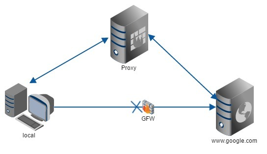
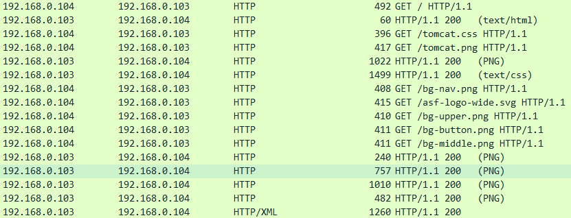
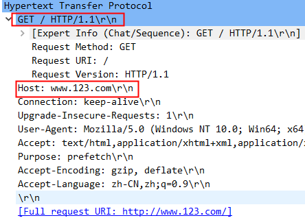
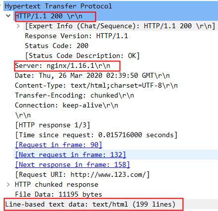

Nginx安装记录
记录一下Nginx的安装过程和实例练习
编译安装
下载
1 | |
环境准备
1 | |
解压
1 | |
编译安装：./configure是个shell脚本，用来检测安装平台的目标特征的。比如它会检测你是不是有CC或GCC，并不是需要CC或GCC；make从Makefile中读取指令然后编译；make install同样也从Makefile中读取指令，安装到指定位置。
1 | |
配置环境变量
1 | |
启动
1 | |
访问测试
关闭
1 | |
重启：重新加载配置文件
1 | |
检测配置文件语法是否正确
1 | |
yum安装
下载
1 | |
常用操作
1 | |
常用文件
- 配置文件：/etc/nginx/nginx.conf
- 自定义的配置文件：/etc/nginx/conf.d
- 项目文件：/usr/share/nginx/html/
- 日志文件：/var/log/nginx/
- 其他安装文件都在/etc/nginx
- 使用
find / -name nginx*全局查找与nginx相关的文件
安装网络工具
1 | |
查看80端口
1 | |
正向代理
比如科学上网VPN就是一个典型的例子，正向代理服务器位于客户端和服务器之间，为了向服务器获取数据，客户端要向代理服务器发送一个请求，并指定目标服务器，代理服务器将目标服务器返回的数据转交给客户端。

反向代理
实例目标：使用 nginx 反向代理
www.123.com直接跳转到192.168.0.103:8080
启动tomcat（192.168.0.103:8080）
修改windows本地host文件，添加映射关系。hosts一般在C:\Windows\System32\drivers\etc\hosts目录下，它是一个没有扩展名的系统文件，IP解析优先级比DNS要高。若没有修改权限，可右键->属性->安全->修改权限；或将hosts移动到桌面，修改后复制回原文件夹。
1 | |
此时，可以通过www.123.com:8080访问tomcat了
使用Nginx反向代理
- 找到nginx.conf，并编辑
1 | |
- nginx.conf核心配置如下
1 | |
- 重新加载nginx配置文件
1 | |
实例结果：访问www.123.com 直接跳转到192.168.0.103:8080也就是tomcat启动页面
Nginx搭建在192.168.0.103这台虚拟机上，在本机也就是客户端，访问
www.123.com，会发生什么？
实例分析：
1.检查本地hosts文件，发现有该域名的解析，拿到解析的ip：192.168.0.103
2.http请求连接到了192.168.0.103的80端口
3.Nginx的80端口一直在被监听，服务器发现请求的uri为/，host为www.123.com，进而匹配到server_name ·www.123.com，并且转到了location / 也就是代理服务器 http://192.168.0.103:8080，至此访问成功。
在这个反向代理过程中，客户端把请求交给Nginx，由Nginx的配置文件制定一些规则把请求转发给服务器，客户端并不知道谁为自己提供了服务，反向代理，其实代理的是服务器。
抓个包来理一下思路，进行报文过滤，只留下相关的http传输作为重点进行分析。

三次握手建立连接之后，客户端向Nginx服务器发起请求。

可以看到客户端请求使用HTTP1.1协议Get方法访问根目录内容，请求的域名为www.123.com。

服务器响应了请求，状态码200OK，回应的Web服务器为Nginx。
又相继传输了HTML和CSS样式以及加载页面所需要的图片，可以看到这个过程中，没有出现被代理服务器的任何信息，也与”反向代理，其实代理的是服务器“这句话相呼应。
负载均衡
负载均衡主要通过专门的硬件设备或者软件算法实现。而通过软件实现的负载均衡主要依赖于均衡算法的选择和程序的健壮性。均衡算法又主要分为两大类：
静态负载均衡算法：主要包括轮询算法、基于比率的加权轮询算法或者基于优先级的加权轮询算法。
动态负载均衡算法：主要包括基于任务量的最少连接优化算法、基于性能的最快响应优先算法、预测算法及动态性能分配算法等。
前期准备
- 复制3个tomcat，分别命名8081、8082、8083作为区分。
1 | |
- 修改相应
conf/server.xml中的端口号
1 | |
- 修改相应的h1标题作为区分
1 | |
- 启动3个tomcat服务
普通轮询算法
实现内容：输入www.123.com 在3个tomcat服务之间进行切换
编辑配置文件
nginx.conf核心内容
1
2
3
4
5
6
7
8
9
10
11
12
13
14
15
16upstream OrdinaryPolling { # 主要用于负载均衡，设置一系列的后端服务器
server 192.168.0.102:8081;
server 192.168.0.102:8082;
server 192.168.0.102:8083;
}
server {
listen 80; # 监听80端口（默认）
server_name www.123.com; # 虚拟主机名（用来指定IP地址或者域名，多个域名之间用空格分开）
location / { # 访问根目录（如果有多个location，会从最长前缀开始匹配，此location匹配http://www.123.com/）
proxy_pass http://OrdinaryPolling;
root html; # 用于指定虚拟主机的网页根目录，这个目录可以是相对路径，也可以是绝对路径
index index.html index.htm index.jsp; # 用于设置网站的默认首页，后面的文件名称可以有多个，中间用空格隔开，第一个找不到，则找第二个，以此类推
}
}重新加载配置文件
1
nginx -s reload
实例访问成功
基于比例加权轮询
某台服务器性能更高，根据他的自身能力可以处理更多的请求
编辑nginx.conf文件，在负载均衡设置中添加weight选项。该指令用于配置前面请求处理的权重，默认值为 1。也就是说，上文不加权的普通轮询，其实其加权值 weight 都为 1。
server 192.168.0.102:8081 weight=6; server 192.168.0.102:8082 weight=2 server 192.168.0.102:8083 weight=2;重新加载配置文件
实例结果：访问
www.123.com跳转到192.168.0.102:8081次数增多。